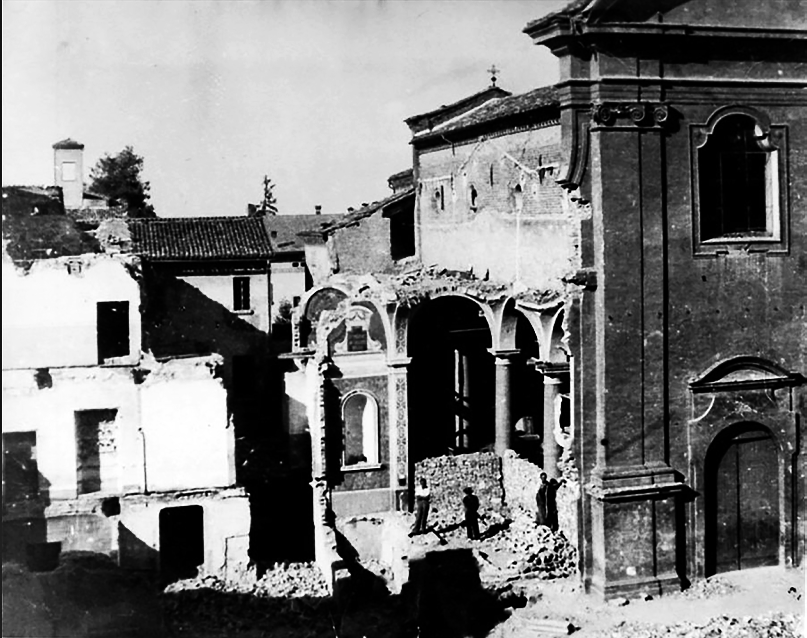

TAPPA 8: Chiesa della Natività
8.1 - Don Albino Rossi

Don Albino Rossi ebbe un ruolo importante nella formazione dei "Gruppi del Vangelo", costituiti da cattolici scandianesi che si opponevano al fascismo, tra cui Ferdinando Cesari "Gabri", Azzo Davoli “Rodolfo”, Canzio Prati “Verdi”, Sereno Folloni “Molteni”, il maestro Renzo Signorelli e altri. Don Rossi vi partecipava con il nome di copertura "Walter".
I “Gruppi del Vangelo” si ritrovavano nella chiesa parrocchiale o nelle case dei partecipanti, ufficialmente per leggere e approfondire il Vangelo e cantare salmi religiosi, in modo da sviare i sospetti di chi assisteva all'andirivieni di persone, mentre in realtà, oltre ai momenti di preghiera, si discutevano e si organizzavano azioni e iniziative di Resistenza all'occupazione nazifascista.
Don Albino Rossi, tra l'altro, ebbe un ruolo importante durante uno degli episodi più drammatici della Resistenza scandianese, proprio pochi giorni prima della Liberazione. Il 19 aprile 1945, i partigiani cercarono di sferrare un attacco ai soldati tedeschi che ancora occupavano il paese, spalleggiati dai fascisti, e attaccarono il comando tedesco di via Trento e le postazioni ancora presenti in viale della Rocca all'interno dell'allora oleificio Gandini.
Don Albino Rossi cercò di negoziare la resa dei tedeschi, ma inutilmente. Durante l’azione, il partigiano Sergio Spallanzani fu colpito quasi certamente da un fascista scandianese appostato alle sue spalle, all’angolo tra viale della Rocca e via Garibaldi.
Morì il 24 aprile, alla vigilia della Liberazione, per le ferite riportate, a soli 21 anni.
I “Gruppi del Vangelo” si ritrovavano nella chiesa parrocchiale o nelle case dei partecipanti, ufficialmente per leggere e approfondire il Vangelo e cantare salmi religiosi, in modo da sviare i sospetti di chi assisteva all'andirivieni di persone, mentre in realtà, oltre ai momenti di preghiera, si discutevano e si organizzavano azioni e iniziative di Resistenza all'occupazione nazifascista.
Don Albino Rossi, tra l'altro, ebbe un ruolo importante durante uno degli episodi più drammatici della Resistenza scandianese, proprio pochi giorni prima della Liberazione. Il 19 aprile 1945, i partigiani cercarono di sferrare un attacco ai soldati tedeschi che ancora occupavano il paese, spalleggiati dai fascisti, e attaccarono il comando tedesco di via Trento e le postazioni ancora presenti in viale della Rocca all'interno dell'allora oleificio Gandini.
Don Albino Rossi cercò di negoziare la resa dei tedeschi, ma inutilmente. Durante l’azione, il partigiano Sergio Spallanzani fu colpito quasi certamente da un fascista scandianese appostato alle sue spalle, all’angolo tra viale della Rocca e via Garibaldi.
Morì il 24 aprile, alla vigilia della Liberazione, per le ferite riportate, a soli 21 anni.